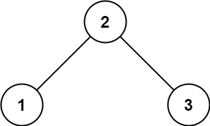

513. 找树左下角的值
BFS 从右往左排队（先入右孩子再入左孩子），出队顺序就是每层从右到左，最后出队的一个就是最底层最左。
思路
- 普通层序是每层从左到右；把入队顺序换成先右后左，整层就反过来从右到左出队。
- 于是最后一个出队的结点 = 最深一层的最左结点，循环结束时的
cur就是答案。 - 不用记深度、不用判层数：队列空了自然停。
- 树至少有一个结点，
root直接入队，不用判空。
图解
最优解
1import java.util.*;2 3class Solution {4 public int findBottomLeftValue(TreeNode root) {5 // 从右往左层序：先入右孩子再入左孩子，最后出队的必然是最底层最左6 Queue<TreeNode> q = new ArrayDeque<>();7 q.add(root);8 TreeNode cur = root;9 while (!q.isEmpty()) {10 cur = q.poll();11 if (cur.right != null) q.add(cur.right);12 if (cur.left != null) q.add(cur.left);13 }14 return cur.val;15 }16}题目
给定一个二叉树的 根节点 root。
请找出该二叉树的 最底层 最左边 节点的值。
示例 1:

输入：root = [2,1,3] 输出：1 解释：最后一行是 [1, 3]，因此最左边的值是 1。
示例 2:

输入：[1,2,3,4,null,5,6,null,null,7] 输出：7 解释：最后一层只有节点 7。
提示:
- 二叉树的节点个数的范围是
[1, 104] -231 <= Node.val <= 231 - 1
题面取自力扣当前版本。
数据快照 2026-11-04。题面版权归力扣所有，本站点仅供本人学习使用，请勿对外发布。